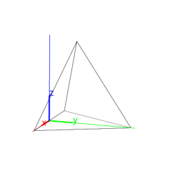
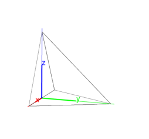

13.16.2 Tetrahedrons: tetrahedron pyramid
The tetrahedron (or pyramid) command takes as
arguments three or four points.
When given three points A, B and C as
arguments, tetrahedron returns and draws the regular
tetrahedron given by:
-
One edge is AB.
- One face is in the plane ABC, on the same side of
line AB as is C.
- The tetrahedron is on the side of plane ABC that makes the
points A, B and C counterclockwise.
Input:
tetrahedron([-2,0,0],[2,0,0],[0,2,0])
or:
pyramid([-2,0,0],[2,0,0],[0,2,0])
Output:

Input:
tetrahedron([-2,0,0],[2,0,0],[0,2,0],[0,0,2])
Output:
